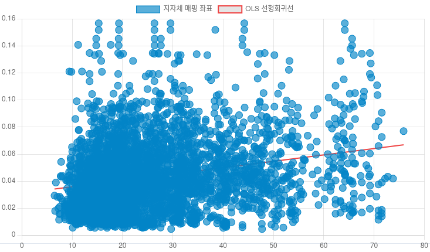

자폐성 장애 당사자의 장애등록과
거주지역의 재정자립도 간의 관계
1. 연구 배경 및 목적
최근 학계 및 활동가들을 중심으로 영유아 및 성인 발달·자폐성 장애인의 진단과 확정 등록에 소요되는 정밀 검사 비용이 과다하여 국가적 지원 체계를 강화해야 한다는 목소리가 커지고 있습니다. 정치권에서도 이러한 의료 장벽을 낮추기 위한 정책 공약이 제기된 바 있습니다.
본 연구는 자폐성 장애의 확정 등록률이 개인 및 거주 지역의 경제적 조건과 유의미하게 맞닿아 있을 것이라는 가설을 기반으로 시작되었습니다. 기초자치단체의 경제 자립 능력을 보여주는 '지방재정자립도'와 '등록 자폐성 장애인 인구 비율' 간의 선형 회귀 분석(Linear Regression)을 실행하여 이들 간의 경제적 장벽 관계를 통계적으로 증명하고자 합니다.
2. 분석 데이터 및 전처리 변수
대한민국 광역자치단체 산하 기초자치단체의 다개년 공개 통계 데이터를 통합하여 연구 데이터셋을 구축하였습니다.
- 분석 대상 기간: 각 지자체별로 수집 가능한 최신 시점 반영 (2013년 ~ 2024년)
- 주요 원천 지표: 공공데이터 및 KOSIS 수집 장애인 현황, 주민등록인구, 지방재정자립지표
- 데이터 전처리과정: Pandas 라이브러리를 통해 한글 텍스트 인코딩(EUC-KR) 문제를 해결하고 정형화했습니다. 기초자치단체별 전체 인구 대비 장애 유형별 인구 비율을 변수로 산출하여 규모 차이에 따른 왜곡을 제거했습니다.
3. 데이터 분석 및 검증 방법론
Python의 statsmodels의 OLS 분석 기법으로 자폐성 장애 비율과 재정자립도 간의 상관관계를 산출하고 타 장애 유형의 독립 회귀계수와 상호 대조했습니다.
4. 실증 분석 결과 (보고서 시각화 반영)
선형 회귀 모델 분석 결과, 처음에 세웠던 가설이 통계적으로 유의미하게 증명되었습니다. 자폐성 장애인 등록 비율은 지역 재정자립도와 유의미한 양(+)의 상관관계를 띱니다 (Coefficient = 0.0005, p < 0.001).

재정자립도와 자폐성 등록의 관계 회귀분석 결과" class="graph-image">특히 주목할 점은 자폐성 장애를 제외한 타 장애 유형(지체, 청각, 지적, 정신장애 등)의 경우 모두 재정자립도와 음(-)의 상관관계를 지니고 있다는 사실입니다.
| 장애 유형 | 회귀계수 (coef) | t값 (t) | P값 (P>|t|) |
|---|---|---|---|
| 자폐성장애 | +0.0005 | 15.217 | 0.000 |
| 지체장애 | -0.0383 | -21.656 | 0.000 |
| 청각장애 | -0.0129 | -20.139 | 0.000 |
| 지적장애 | -0.0076 | -23.350 | 0.000 |
| 정신장애 | -0.0035 | -20.045 | 0.000 |
5. 결론 및 정책 제언
본 분석 결과는 자폐성 장애의 경우, 다른 일반적인 장애 유형과 대조적으로 거주 지역의 재정·경제적 여건에 따라 장애 등록 단계에서 실질적인 장벽이 작동하고 있음을 실증적으로 드러내고 있습니다.
따라서 지자체의 재정 자립 능력이나 개인의 소득 격차와 무관하게 모든 영유아 및 신경다양인이 자폐성 장애 정밀 검사 및 확정 등록 프로세스를 체계적으로 수행할 수 있도록 돕는 '보편적 발달장애 진단 및 등록 비용 지원 확대 정책'이 조속히 실현되어야 할 것입니다.